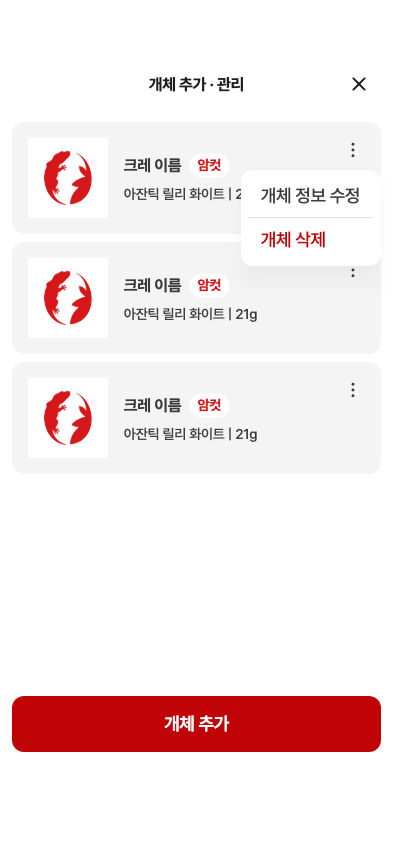
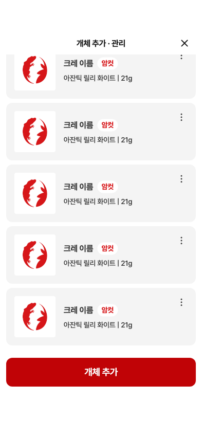

24 · 개체 추가·관리 목록
24번 · 0.107.28+239 수정 화면 재확인
수정 완료
① 우측 닫기 · 사진80pt/모서리4pt
② 이름 굵기700 · 성별 배지 · 21g 표기
③ 메뉴 x241/y170,140×96 · 원본 폰트/색상
④ 빨간 개체 추가 버튼 y696 · 스크롤 중 고정
긴 이름과 마지막 개체 메뉴 접근까지 검증했습니다.
Figma 원본 · 메뉴 열린 상태 24 · 수정한 제품 위젯 캡처
24 · 수정한 제품 위젯 캡처
같은 세 카드로 사진·폰트·성별 배지·메뉴·버튼 수치를 재측정했습니다. 원본 x3 사진 PNG를 그대로 사용했습니다.
메뉴 닫힘·10자 이름
10자 이름 잘림은 사진 로딩 후 재촬영에서 재현되지 않았습니다. 그림자를 포함한 위젯 캡처이며 실서버 삭제는 수행하지 않았습니다.
12개체 스크롤 검증

미세 차이: 일부 글자/닫기 좌표1pt 미만, 로고 진한 픽셀 가로1px. 그림자 수치 완전 일치는 미판정입니다.
상세 측정표·수정 제안